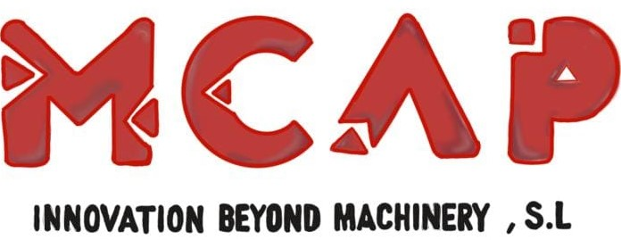

High-quality CNC machinery for industrial applications.
Explore ProductsEn MCAP Innovation acercamos a la industria española las soluciones de fabricación más avanzadas del mercado. Somos especialistas en la distribución de maquinaria y tecnología de alta precisión para empresas de los sectores aeronáutico, automoción, energía, ingeniería y fabricación industrial.
Nuestro compromiso es ayudar a los fabricantes a mejorar sus procesos productivos mediante equipos fiables, innovadores y de máxima calidad, ofreciendo un servicio cercano y un asesoramiento técnico especializado en cada proyecto.
Starrag es uno de los principales fabricantes internacionales de máquinas-herramienta de alta precisión. Con una sólida trayectoria y origen suizo, desarrolla soluciones de mecanizado para aplicaciones donde la precisión, la productividad y la fiabilidad son fundamentales.
Sus tecnologías están presentes en industrias altamente exigentes, entre ellas:
En MCAP Innovation somos el distribuidor exclusivo de Starrag en España, con excepción de la división de torneado. Esta colaboración nos permite ofrecer acceso directo a una de las gamas de maquinaria más avanzadas del mercado, respaldada por un equipo técnico con amplia experiencia.
Acompañamos a nuestros clientes durante todo el ciclo de vida de sus equipos, proporcionando soluciones adaptadas a sus necesidades de producción.
En MCAP Innovation ofrecemos mucho más que la distribución de maquinaria de alta precisión. Ponemos a disposición de nuestros clientes un servicio técnico especializado que garantiza la máxima disponibilidad, rendimiento y fiabilidad de cada equipo durante toda su vida útil.
Nuestro equipo de ingenieros y técnicos cuenta con formación específica y el respaldo directo de Starrag, lo que nos permite proporcionar un soporte ágil y altamente cualificado en cualquier fase del proyecto.
Realizamos la instalación completa de los equipos, su configuración inicial y la validación de su funcionamiento para que comiencen a producir con todas las garantías.
Diseñamos planes de mantenimiento que reducen paradas no programadas, prolongan la vida útil de la maquinaria y mantienen un alto nivel de productividad.
Actuamos con rapidez ante cualquier incidencia mediante diagnósticos avanzados, procedimientos especializados y el uso de repuestos originales cuando son necesarios.
Asesoramos sobre mejoras técnicas, nuevas aplicaciones y actualizaciones que permitan aumentar el rendimiento y adaptar la maquinaria a nuevas necesidades de fabricación.
Nuestro objetivo es convertirnos en un socio técnico de confianza, acompañando a cada cliente para que sus equipos Starrag mantengan el máximo nivel de precisión, disponibilidad y eficiencia.
Acompañamos a nuestros clientes durante todo el ciclo de vida de sus inversiones, ofreciendo un servicio integral que va desde la definición de la solución más adecuada hasta el soporte técnico y la mejora continua de los equipos.
Estudiamos cada proyecto para recomendar la solución de mecanizado que mejor se adapta a los objetivos de producción.
Coordinamos la implantación de la maquinaria para conseguir una incorporación rápida y eficiente a la línea de fabricación.
Ofrecemos mantenimiento, asistencia técnica y asesoramiento para asegurar el mejor rendimiento de cada instalación.
La experiencia acumulada por MCAP Innovation nos ha permitido colaborar con compañías de referencia en los sectores de automoción, aeronáutica, energía e industria de alta precisión en España.
Implantación de soluciones de mecanizado que contribuyen a mejorar la precisión y optimizar los tiempos de fabricación de componentes de alta complejidad.
Proyectos orientados a incrementar la productividad y la calidad del mecanizado en piezas técnicas y componentes críticos.
Soluciones adaptadas a procesos de fabricación donde la fiabilidad y la precisión son requisitos fundamentales.
La innovación forma parte de nuestra manera de trabajar. Apostamos por incorporar tecnologías de mecanizado de última generación que ayuden a nuestros clientes a afrontar nuevos retos de fabricación con mayor eficiencia y competitividad.
Junto a Starrag, seguimos acercando a la industria española soluciones capaces de responder a las exigencias de los procesos de producción más avanzados.